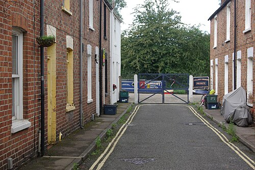
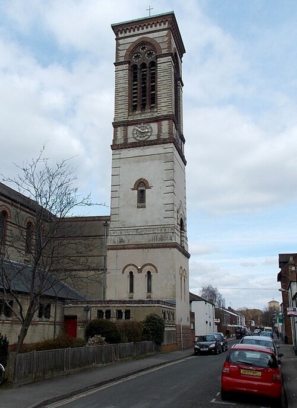
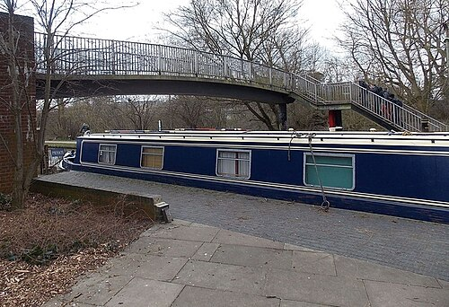
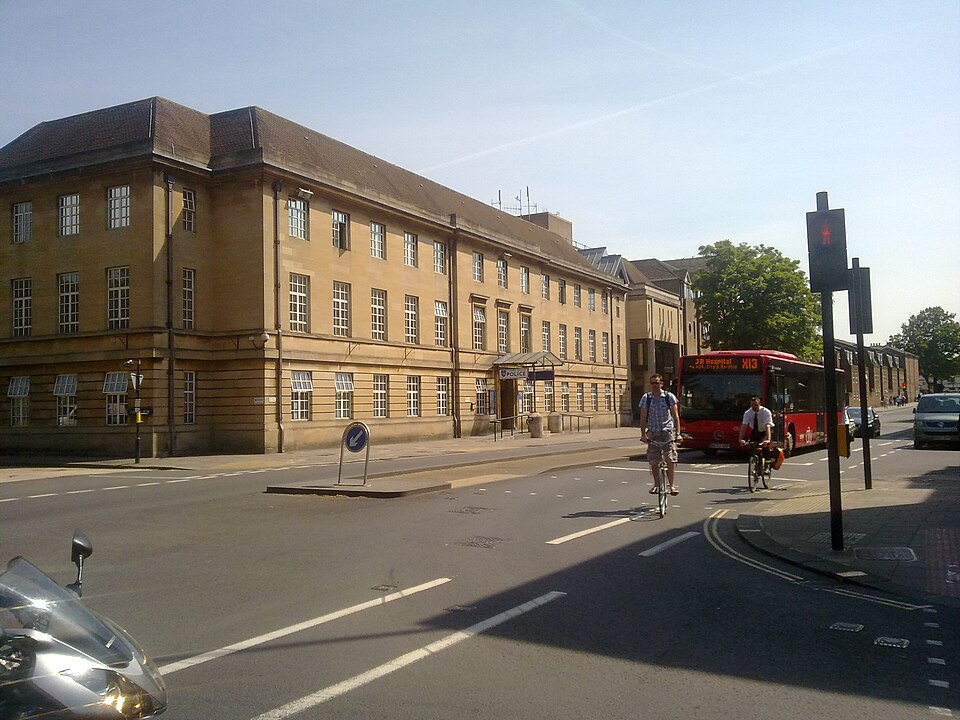
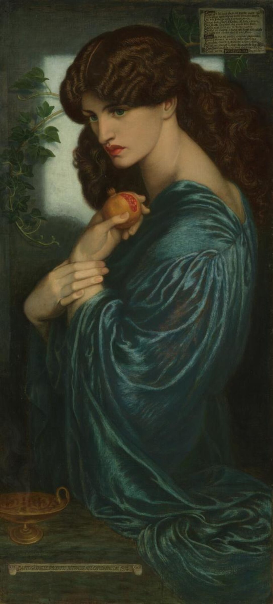

Роман · 1981
Мертвецы Джерико
The Dead of Jericho — пятый роман об инспекторе Морсе. Русское название рабочее.
- Первое издание
- Macmillan, Лондон, 4 июня 1981
- Премия
- «Серебряный кинжал» Ассоциации авторов детективов, 1981
- Расследуют
- главный инспектор Морс и сержант Льюис
- Место
- Джерико — рабочий квартал у канала в Оксфорде
- Экранизация
- «Инспектор Морс», 6 января 1987 — самая первая серия; режиссёр Аластер Рид, сценарий Энтони Мингеллы
Завязка
На вечеринке у миссис Мердок в Северном Оксфорде Морс знакомится с Энн Скотт. Через полгода её находят повешенной на кухне её дома в Джерико, на Канал-Рич, 9. Дело ведёт как самоубийство главный инспектор Белл из центрального участка на Сент-Олдейтс. Морс, который как раз в этот день собирался навестить Энн, начинает разбираться сам, а через две недели дело официально передают ему, и он сомневается, что это самоубийство.
Под подозрением сыновья миссис Мердок, Эдвард (Тед) и Майкл, братья Чарльз и Конрад Ричардс, у которых Энн когда-то работала, жена Чарльза Селия и любопытный сосед, мастер на все руки Джордж Джексон. Вскоре случается вторая смерть.
Одна из глав открывается эпиграфом из «Царя Эдипа» Софокла — о петле и повешенной женщине, и весь роман то и дело примеряет к себе сюжет греческой трагедии. В этом романе Морс впервые выступает главным инспектором, а в тексте появляется загадочный инициал «Э.».
Люди
| Имя | Кто это |
|---|---|
| Энн Скотт | Женщина, с которой Морс познакомился на вечеринке. |
| Миссис Мердок | Хозяйка вечеринки в Северном Оксфорде. |
| Тед и Майкл Мердоки | Её сыновья. |
| Чарльз и Конрад Ричардсы | Братья, бывшие работодатели Энн. |
| Селия Ричардс | Жена Чарльза. |
| Джордж Джексон | Сосед Энн, мастер на все руки и большой любитель подглядывать. |
| Главный инспектор Белл | Начинал дело в центральном участке. |
Места
Джерико — квартал к северо-западу от центра, между Вальтон-стрит и Оксфордским каналом. В XIX веке здесь жили рабочие университетской типографии и литейщики, над крышами стоит итальянская колокольня церкви Святого Варнавы. У Томаса Харди в «Джуде Незаметном» этот квартал выведен как Вирсавия.
| Место | Что там происходит | |
|---|---|---|
| Канал-Рич, 9 | в романе | Дом Энн Скотт. В сериале улицу сыграли Кэнал-стрит и Комб-роуд. |
| Оксфордский канал | есть | Канал XVIII века, западная граница Джерико. |
| Св. Варнава | есть | Приходская церковь Джерико с колокольней в итальянском стиле. |
| Участок на Сент-Олдейтс | есть | Центральное полицейское управление Оксфорда, где служит Белл. |
| Северный Оксфорд | есть | Дом миссис Мердок, где Морс встречает Энн. |








Реалии
- Джерико (Jericho)
- Бывший рабочий район Оксфорда. В семидесятые его старые дома скупали и перестраивали люди среднего класса; Энн Скотт из их числа.
- Оксфордский канал
- Судоходный канал, соединивший Оксфорд с промышленным Мидлендом в конце XVIII века. К семидесятым по нему ходили уже прогулочные лодки.
- Главный инспектор (Chief Inspector)
- Звание выше инспектора. Морс получает его к этому роману и останется в нём до конца.
- «Царь Эдип»
- Трагедия Софокла о человеке, который, не зная того, убил отца и женился на матери. Его мать Иокаста, узнав правду, повесилась.
- Хоровое общество
- Любительский хор, каких в Оксфорде десятки. В сериале Морс поёт в одном хоре с Энн.
Книга и сериал
С этой серии 6 января 1987 года начался «Инспектор Морс». Снимали летом 1986-го. В ролях: Джон Тоу, Кевин Уотли, Джемма Джонс (Энн Стейвли), Джеймс Лоренсон (Тони Ричардс), Ричард Дёрден (Алан Ричардс), Энни Ламберт (Адель Ричардс), Спенсер Ли (Нед Мердок) и Патрик Траутон (Джордж Джексон) в одной из последних своих ролей. Декстер проходит по галерее навстречу Морсу, и тот подозрительно оглядывается на него.
- Энн носит фамилию Стейвли; Ричардсы стали Тони, Аланом и Аделью; Нед Мердок соединил в себе двух братьев из книги.
- Морс поёт с Энн в одном хоре и явно к ней неравнодушен.
- «Ягуар» в ремонте, и Морс ездит на «Остине Монтего». Здесь же начинается шутка о том, что Морс никогда не платит за выпивку, а Стрейндж говорит ему, что он умён, но не умеет говорить нужные слова нужным людям.
- Хор снимали в бывшем санатории Ройял-Холлоуэй в Вирджиния-Уотер, «Канал-Рич» — на Кэнал-стрит и Комб-роуд, Рэдклиффскую больницу — в обсерваторском квартале.
- На кухне у Энн висит «Прозерпина» Россетти, на тумбочке лежит «Царь Эдип», а Морс играет на её фортепиано начало «Тристана и Изольды».
- Музыка: хоровая песня Пэрри на стихи Генри Воана, «Глория» Вивальди, прелюдия ми минор Шопена, которую плохо играет ученица Энн, Моцарт и «Фантазия-экспромт» Шопена у Морса дома.


Развязка серии — открыть
Энн действительно покончила с собой; вскрытие показало, что она была беременна. Шантажиста Джорджа Джексона убивает Алан Ричардс. Версия Морса о том, что Нед — сын Энн и в истории повторяется Эдип, не подтверждается.
Развязку романа мы перескажем, когда сверим её по двум независимым источникам.